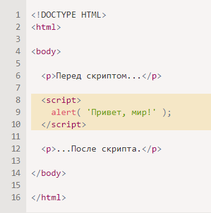
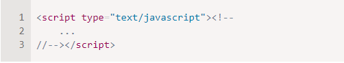
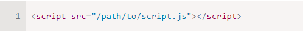
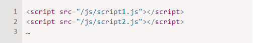
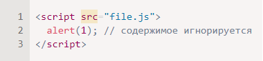
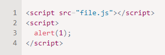

В этой части учебника мы изучаем собственно JavaScript, сам язык.
Но нам нужна рабочая среда для запуска наших скриптов, и, поскольку это онлайн-книга, то браузер будет хорошим выбором. В этой главе мы сократим количество с пецифичных для браузера команд (например, alert) до минимума, чтобы вы не тратили на них время, если планируете сосредоточиться на другой среде (например, Node.js). А на использовании JavaScript в браузере мы сосредоточимся в следующей части учебника.
Итак, сначала давайте посмотрим, как выполнить скрипт на странице. Для серверных сред (например, Node.js), вы можете выполнить скрипт с помощью команды типа "node my.js". Для браузера всё немного иначе.
Программы на JavaScript могут быть вставлены в любое место HTML-документа с помощью тега <script>.
Для примера:
Тег <script>; содержит JavaScript-код, который автоматически выполнится, когда браузер его обработает.
Тег <script> имеет несколько атрибутов, которые редко используются, но всё ещё могут встретиться в старом коде:
Атрибут type: script type=…>
Старый стандарт HTML, HTML4, требовал наличия этого атрибута в теге <script>. Обычно он имел значение type="text/javascript". На текущий момент этого больше не требуется. Более того, в современном стандарте HTML смысл этого атрибута полностью изменился. Теперь он может использоваться для JavaScript-модулей. Но это тема не для начального уровня, и о ней мы поговорим в другой части учебника.
Атрибут language: <script language=…&brt;Этот атрибут должен был задавать язык, на котором написан скрипт. Но так как JavaScript является языком по умолчанию, в этом атрибуте уже нет необходимости.
В очень древних книгах и руководствах вы сможете найти комментарии внутри тега <script>, например, такие:
Этот комментарий скрывал код JavaScript в старых браузерах, которые не знали, как обрабатывать тег <script>. Поскольку все браузеры, выпущенные за последние 15 лет, не содержат данной проблемы, такие комментарии уже не нужны. Если они есть, то это признак, что перед нами очень древний код.
Если у вас много JavaScript-кода, вы можете поместить его в отдельный файл.
Файл скрипта можно подключить к HTML с помощью атрибута src:
Здесь /path/to/script.js – это абсолютный путь до скрипта от корня сайта. Также можно указать относительный путь от текущей страницы. Например, src="script.js" или src="./script.js" будет означать, что файл "script.js" находится в текущей папке.
Можно указать и полный URL-адрес. Например:
<script src="https://cdnjs.cloudflare.com/ajax/libs/lodash.js/3.2.0/lodash.js">
Для подключения нескольких скриптов используйте несколько тегов:
Как правило, только простейшие скрипты помещаются в HTML. Более сложные выделяются в отдельные файлы.
Польза отдельных файлов в том, что браузер загрузит скрипт отдельно и сможет хранить его в кеше .
Другие страницы, которые подключают тот же скрипт, смогут брать его из кеша вместо повторной загрузки из сети. И таким образом файл будет загружаться с сервера только один раз.
Это сокращает расход трафика и ускоряет загрузку страниц.
В одном теге <script> нельзя использовать одновременно атрибут src и код внутри.
Нижеприведённый пример не работает: 
Нужно выбрать: либо внешний скрипт <script src="…">, либо обычный код внутри тега <script>.
Вышеприведённый пример можно разделить на два скрипта:

Нам ещё многое предстоит изучить про браузерные скрипты и их взаимодействие со страницей. Но, как уже было сказано, эта часть учебника посвящена именно языку JavaScript, поэтому здесь мы постараемся не отвлекаться на детали реализации в браузере. Мы воспользуемся браузером для запуска JavaScript, это удобно для онлайн-демонстраций, но это только одна из платформ, на которых работает этот язык.